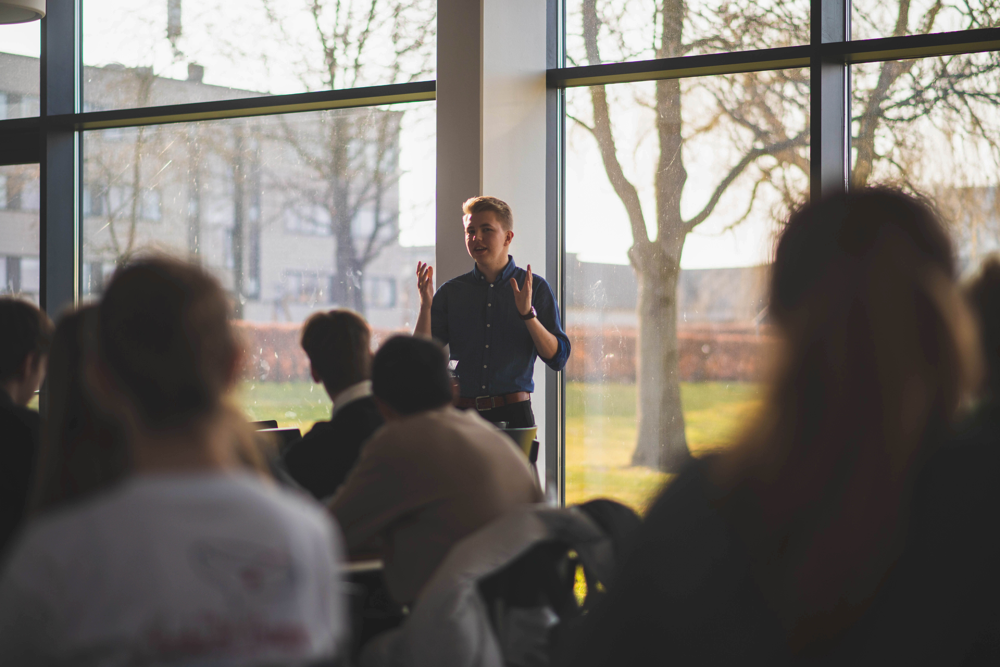

Foredrag og workshops om science, formidling, og trivsel Talks and workshops on science, communication, and wellbeing
Med seks års erfaring inden for naturvidenskabelig formidling fortæller jeg om moderne fysik på en let tilgængelig måde, gør videnskaben levende og inspirerer til nysgerrighed for mennesker i alle aldre. With six years of experience in science communication, I share stories about modern physics in an engaging and accessible way, inspiring curiosity in audiences of all ages.
Derudover afholder jeg både foredrag og workshops om formidling, baseret på min erfaring med at udvikle meningsfuld videnskabsformidling for CERN – den europæiske organisation bag verdens største videnskabelige eksperiment på grænsen mellem Frankrig og Schweiz. I also host talks and workshops on communication, based on my experience designing meaningful science outreach for CERN – the European organization behind the world’s largest scientific experiment on the border between France and Switzerland.
Samtidig har jeg gennem de seneste seks år afholdt trivselsworkshops for unge, faciliteret gennem et samtalespil, som jeg har designet med støtte fra Novo Nordisk Fonden. In parallel, I have spent the past six years facilitating wellbeing workshops for young people through a conversation game I designed with support from the Novo Nordisk Foundation.

Foredrag og workshops om science, formidling, og trivsel Talks and workshops on science, communication, and wellbeing
Med seks års erfaring inden for naturvidenskabelig formidling fortæller jeg om moderne fysik på en let tilgængelig måde, gør videnskaben levende og inspirerer til nysgerrighed for mennesker i alle aldre. With six years of experience in science communication, I share stories about modern physics in an engaging and accessible way, inspiring curiosity in audiences of all ages.
Derudover afholder jeg både foredrag og workshops om formidling, baseret på min erfaring med at udvikle meningsfuld videnskabsformidling for CERN – den europæiske organisation bag verdens største videnskabelige eksperiment på grænsen mellem Frankrig og Schweiz. I also host talks and workshops on communication, based on my experience designing meaningful science outreach for CERN – the European organization behind the world’s largest scientific experiment on the border between France and Switzerland.
Samtidig har jeg gennem de seneste seks år afholdt trivselsworkshops for unge, faciliteret gennem et samtalespil, som jeg har designet med støtte fra Novo Nordisk Fonden. In parallel, I have spent the past six years facilitating wellbeing workshops for young people through a conversation game I designed with support from the Novo Nordisk Foundation.
Om mig About me
Med mere end 4.000 timers erfaring inden for undervisning og Science formidling. With more than 4,000 hours of experience in teaching and science communication.
Jeg er cand.scient. i fysik fra Aarhus Universitet og har samarbejdet med CERN om at udvikle træningsprogrammer for deres science-guider. I hold an MSc in Physics from Aarhus University and have collaborated with CERN to design training programs for their science guides.
- At Være Ung: Leder for min selvstartet frivillige forening, der arbejder for unges trivsel og mental sundhed. At Være Ung: Founder and leader of a volunteer organization supporting youth wellbeing and mental health.
- Science Museerne, Aarhus: Science formidling, der gør komplekse idéer tilgængelige og spændende. The Science Museums, Aarhus: Communicating complex ideas in engaging and relatable ways.
- Samarbejde med CERN: Medudvikler af interaktiv træning for scienceformidlere og undervisere. CERN Collaboration: Co-developer of interactive training for science communicators and educators.
Hvad folk siger What people say
“Kristians energi og nysgerrighed smitter – han får alle til at føle sig som en del af rejsen.” “Kristian’s energy and curiosity are contagious – he makes everyone feel part of the journey of discovery.” — Deltager på workshop — Workshop participant
“Han formår at gøre selv det svære inden for fysik både forståeligt og spændende. En inspirerende formidler.” “He manages to make even complex physics understandable and exciting. A truly inspiring communicator.” — Formidlingschef ved Science Museerne — Head of Communication at the Science Museums
“Eleverne taler stadig om forløbet flere måneder senere. Det satte gang i ægte engagement og eftertanke.” “Students kept talking about the session for months afterwards. It sparked genuine engagement and reflection.” — Gymnasielærer — High school teacher
Kunne du tænke dig at samarbejde om noget nyt? Interested in collaborating on something new?
Send mig en email — jeg elsker at høre om nye projekter og potentielle partnerskaber. Send me an email — I love hearing about new ideas and potential partnerships.